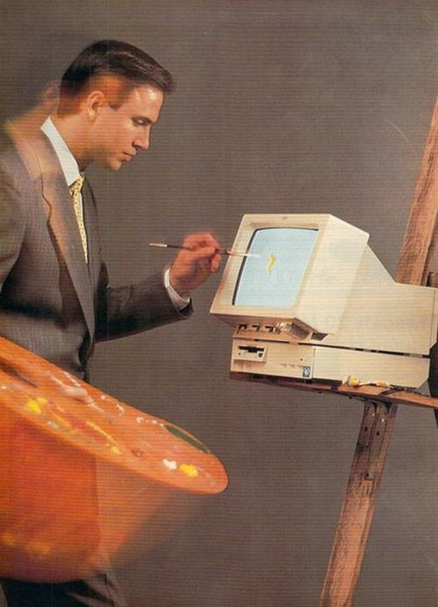
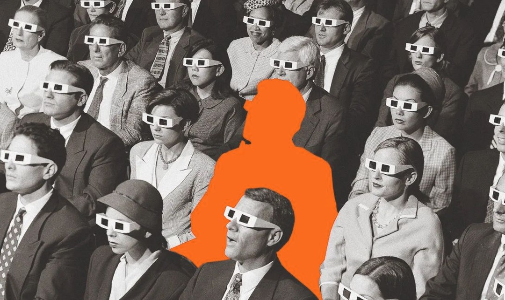

01/07
Claude Motion

Resultados del trimestreVentas +18%Ilustración
0:12 / 0:30
Tu reporte, convertido en un video de 30 segundos.
Sin editor de video y sin grabar nada.

Sin editor de video y sin grabar nada.
Anthropic lo dice así: no usa un modelo de generación de video. Es código que se puede editar.
Le pides cambios en el chat o lo editas tú. Cambias un detalle y lo demás no se toca.
Para empezar, escribe /motion en el chat. Después lo puedes abrir en Adobe, Descript, Runway y otras.

